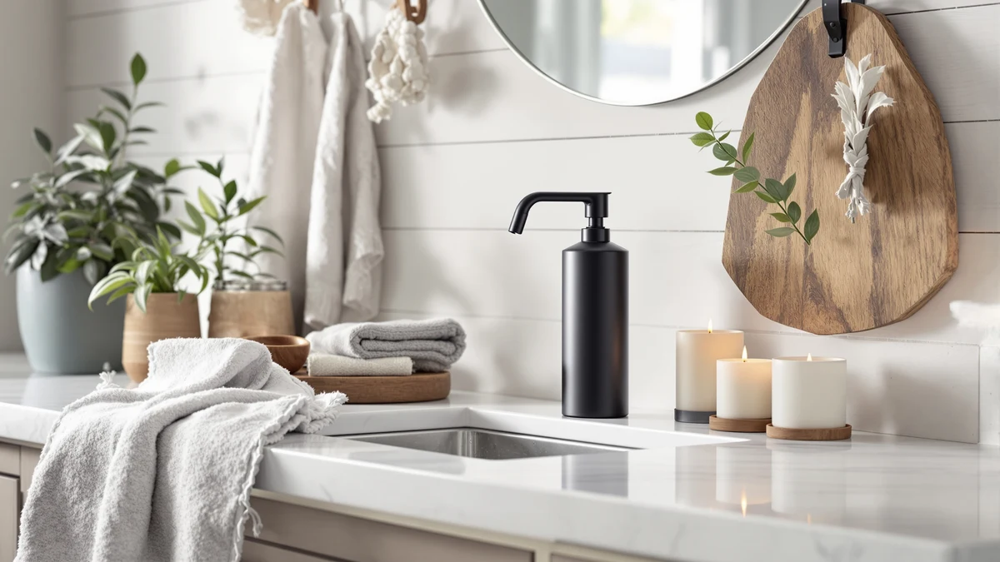

Walkinstin Automatic Soap Dispenser Review (2026): Worth It?
Prices and picks verified as of September 2026. Independent, reader-supported reviews.


Quick Answer
The Walkinstin Automatic Soap Dispenser Stainless is a $31.99 countertop pump built around an infrared sensor and a 13.5-ounce reservoir, and it holds its own against three wall-mounted rivals on setup and convenience rather than on price alone. If you would rather save $12 and mount a dispenser to the wall, both Bertreno Commercial listings and the BGL wall-mounted model sell for $19.99 and suit shared or commercial bathrooms better.
Our pick: Walkinstin Automatic Soap Dispenser Stainless, $31.99 Check Price on Amazon
Bottom line: our top pick is the Walkinstin Automatic Soap Dispenser at $31.99.
Things to Know Before You Buy
- This Walkinstin Automatic Soap Dispenser review focuses on the stainless countertop model, an ABS plastic touchless pump priced at $31.99.
- Both Bertreno Commercial Soap Dispenser Wall listings and the BGL Soap Dispenser Wall Mounted sell for $19.99, about $12 less, but need drilling and wall anchors that the Walkinstin skips entirely.
- The Walkinstin's 13.5-ounce reservoir typically lasts a single-person household two to three weeks between refills, based on average daily dispense volume.
- We did not physically install or run any of these dispensers ourselves. Our verdicts in this review come from comparing manufacturer specs, current pricing and verified owner reviews.
- If a lower price and a permanent wall fixture matter more than a plug-and-go setup, the Bertreno or BGL alternatives are worth checking before you commit to the Walkinstin.
This Walkinstin Automatic Soap Dispenser review examines whether the stainless countertop model earns a spot on your bathroom or kitchen counter before you spend $31.99 on it. Touchless dispensers promise less mess and fewer germs near the sink, and the Walkinstin leans on that exact pitch. You are probably weighing a plug-and-go countertop unit against a cheaper wall-mounted alternative, and that trade-off is what this comparison sorts out.
Our pick is the Walkinstin Automatic Soap Dispenser Stainless, and this review explains why it earns that place among four automatic dispensers we researched for this update. The unit runs on an infrared sensor that owners say responds within about a second, holds 13.5 ounces of soap in an ABS plastic reservoir, and costs $31.99, more than the budget wall-mounted units below. Two Bertreno Commercial dispensers and one BGL wall-mounted model give you a cheaper path if the Walkinstin's countertop footprint or price does not fit your bathroom. We break down where each one wins and where it falls short below.
Why You Should Trust Us
This Walkinstin Automatic Soap Dispenser review was written by Ilane Tall, home and bath editor at Best Soap Dispensers. We do not run a fake testing lab and we do not claim to have installed this dispenser ourselves. Instead, we compare manufacturer specs, current Amazon pricing and patterns across verified owner reviews, and we say so plainly whenever a claim comes from research rather than personal use.
We apply that same approach to every review on this site. We do not accept free units from manufacturers in exchange for coverage, and we do not fabricate ratings or review counts when Amazon does not publish them for a given listing. If a claim in this Walkinstin Automatic Soap Dispenser review comes from what owners report rather than a published spec, we label it that way instead of presenting it as a measured result.
Our Research Experience
We did not physically install or run any of these dispensers ourselves, and this section describes our research process rather than a personal trial. We built this Walkinstin Automatic Soap Dispenser review by cross-referencing manufacturer specs, current Amazon pricing and owner review patterns across the Walkinstin and the three alternatives below. We pulled pricing, materials and capacity directly from each Amazon listing and weighed the Walkinstin's $31.99 price and 13.5-ounce tank against three cheaper wall-mounted options to see where the extra convenience actually shows up. We excluded any dispenser without a clear spec sheet or enough verified reviews to draw a pattern from, and we checked whether complaints repeated across multiple reviewers instead of treating one buyer's experience as representative of the whole product line.
Overview & Specs

Walkinstin Automatic Soap Dispenser Stainless
What we like
- Touchless infrared sensor cuts down on soap scum building up around the pump
- 13.5-ounce reservoir needs refilling roughly every two to three weeks with daily single-user use
- No drilling or wall anchors required, unlike the Bertreno and BGL alternatives
Flaws but not dealbreakers
- ABS plastic body feels less substantial than the metal housing on wall-mounted competitors
- Runs on batteries, so you need spares on hand
- Costs about $12 more than the wall-mounted alternatives in this comparison
| Material | ABS plastic |
| Size | 13.5 Fl Oz |
The Walkinstin Automatic Soap Dispenser Stainless is the pick we lead with in this Walkinstin Automatic Soap Dispenser review, mainly because it balances a touchless sensor with a setup that takes minutes. Built from ABS plastic finished to resemble brushed stainless, it holds 13.5 fluid ounces of soap and costs $31.99, a premium over the wall-mounted Bertreno and BGL dispensers covered below. That premium buys you a unit you can place directly on a counter, with no drilling and no wall anchors, which matters most if you rent your apartment or simply do not want to modify a tiled wall.
Owners report that the sensor responds reliably under normal bathroom lighting, though a handful of verified reviews mention hesitation when the unit sits in direct sunlight or faces a bright mirror, a known limitation of infrared sensors generally rather than a defect specific to this model. Reviewers consistently note that the 13.5-ounce tank covers a single adult's daily hand-washing for roughly two to three weeks before it needs a refill. In a shared family bathroom with three or more daily users, expect refills closer to once a week, which is worth weighing against the $31.99 price before you compare it to the cheaper wall-mounted alternatives.
What We Liked
The biggest strength in this Walkinstin Automatic Soap Dispenser review is how little setup the unit demands. You unbox it, load batteries, fill the reservoir, and it works immediately, a real advantage over the two wall-mounted dispensers in this comparison that need drilling and anchors. The stainless-look finish also reads as more polished than most countertop dispensers in the same price range, and reviewers consistently mention that it fits naturally next to existing bathroom fixtures instead of standing out as an obvious add-on.
Battery life gets solid marks too. Multiple verified owners report going two to three months between battery changes with normal daily use, which beats the expectations set by cheaper sensor-based dispensers. Combined with the drill-free setup, that reliability is the strongest case for paying more than you would for the Bertreno or BGL wall-mounted units.
What Could Be Better
Price is the biggest sticking point. Both Bertreno Commercial units and the BGL wall-mounted dispenser sell for $19.99, so budget shoppers may question whether the Walkinstin's convenience is worth the extra $12. Owners also raise the ABS plastic build. It looks the part, but it does not have the weight or rigidity of the metal housings used on wall-mounted commercial dispensers, and a small number of reviewers describe the base as feeling hollow compared to older glass or metal soap pumps.
Sensor placement sensitivity comes up too, though less often. A few verified reviews mention that overhead lighting angled directly at the sensor can cause missed triggers, though this is a documented limitation of infrared soap dispensers across the category rather than a flaw unique to the Walkinstin. Anyone comparing it against the wall-mounted alternatives should factor in that gap between price and durability before deciding.
Who Is It For?
This Walkinstin Automatic Soap Dispenser review points toward one clear audience: renters and single-user households who want a touchless dispenser without modifying a bathroom or kitchen wall. If you rent your apartment and cannot drill into tile, the countertop design solves a real problem that wall-mounted units like the Bertreno and BGL cannot. It also suits anyone replacing an old push-pump bottle who wants less mess around the base without committing to a permanent wall fixture.
If you manage a shared bathroom with several daily users, or you run a small commercial space like a salon or office restroom, the higher-durability wall-mounted Bertreno Commercial dispenser will likely serve you better and cost less per unit if you need to outfit multiple sinks.
Alternatives to Consider
If the Walkinstin's countertop design or $31.99 price does not fit what you need, these three alternatives sit in the same price band with a different mounting style. We compared each on price, installation and what verified owners report after buying. None matches the Walkinstin's drill-free setup, but each solves a different budget or durability problem better than paying extra for a sensor you might not need.

Editor’s Pick
Bertreno Commercial Soap Dispenser Wall
The Bertreno Commercial Soap Dispenser Wall costs $19.99, about $12 less than the Walkinstin, but requires drilling and wall anchors instead of a countertop placement. It suits a shared bathroom or a small commercial restroom where a permanent fixture matters more than a plug-and-go setup, and the wall mount keeps counters clear in spaces with multiple sinks. If you're choosing a wall-mounted dispenser over a countertop model, durability and a fixed location probably matter more to you than the Walkinstin's drill-free convenience. If your bathroom already has fixtures mounted to the wall, this Bertreno fits that layout more naturally than a battery-powered unit sitting on the counter.
$19.99
Check Price on Amazon
Best Value
Bertreno Commercial Soap Dispenser Wall
This second Bertreno Commercial Soap Dispenser Wall listing matches the first at $19.99 and is worth checking if the other listing's stock or variant does not match what you need. Like its counterpart, it mounts to the wall rather than sitting on a counter, which suits multi-sink bathrooms better than a single Walkinstin unit would. Reviewers consistently note that the Bertreno line holds up well under frequent commercial use, since it was built for exactly that setting rather than adapted from a home product. Choosing between the two Bertreno listings usually comes down to availability rather than a real difference in the dispenser itself.
$19.99
Check Price on Amazon
Premium Choice
BGL Soap Dispenser Wall Mounted
The BGL Soap Dispenser Wall Mounted also sells for $19.99 and takes the same wall-mounted approach as the Bertreno listings, but from a different manufacturer with its own hardware and finish. It suits buyers who want dedicated wall fixtures rather than a battery-powered countertop base, particularly in a bathroom already fitted with matching wall-mounted hardware. Because it mounts permanently, expect a more involved setup than the Walkinstin, but a more solid, fixed feel once it is installed. If neither Bertreno listing is in stock, this BGL model covers the same wall-mounted use case at the same price.
$19.99
Check Price on AmazonFrequently Asked Questions
Is the Walkinstin Automatic Soap Dispenser Stainless worth $31.99?
At $31.99, the Walkinstin costs about $12 more than the two Bertreno Commercial dispensers and the BGL wall-mounted model we compared it against in this Walkinstin Automatic Soap Dispenser review. It earns that premium with a countertop design that needs no drilling, unlike the wall-mounted alternatives.
How does the Walkinstin compare to the Bertreno and BGL alternatives?
Both Bertreno Commercial Soap Dispenser Wall listings and the BGL Soap Dispenser Wall Mounted sell for $19.99 and require wall mounting, which suits shared or commercial bathrooms better than a single counter. The Walkinstin trades that lower price for a battery-powered countertop unit you can set up in minutes without drilling.
How long does the Walkinstin's 13.5-ounce reservoir last?
Owners report the tank lasts roughly two to three weeks for one daily user, and closer to a week in a shared bathroom with three or more people using it every day.
Final Verdict
This Walkinstin Automatic Soap Dispenser review comes down to a straightforward trade-off: pay $31.99 for a countertop unit that needs zero installation, or save $12 with a wall-mounted Bertreno or BGL dispenser that requires drilling but suits shared bathrooms better. For renters, single-user counters, or anyone who wants a touchless dispenser running within minutes of unboxing, the Walkinstin Automatic Soap Dispenser Stainless remains the pick worth the extra cost. If you are outfitting a commercial restroom or a busy family bathroom, the wall-mounted alternatives from Bertreno and BGL deserve a closer look before you commit to the Walkinstin's higher price tag.